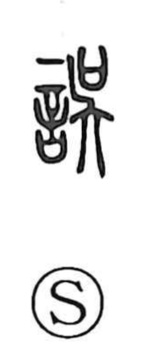

誤

Uncategorized
Kun: ayamaru, ayamari | On: go
mistake ・ error ・ to err ・ to be mistaken
Explanation
Shirakawa reads 誤 as a phono-semantic character: the domain of speech is implied, while 呉 (吳) serves as the phonetic. In early forms 呉 depicts a person holding a sai—the covenant receptacle that receives written prayers—praying in a dance meant to delight the deities. Words uttered in that loosened, ecstatic state tend to stray from correct speech and mislead, so when joined with the speech element the graph came to mean to err or a mistake.